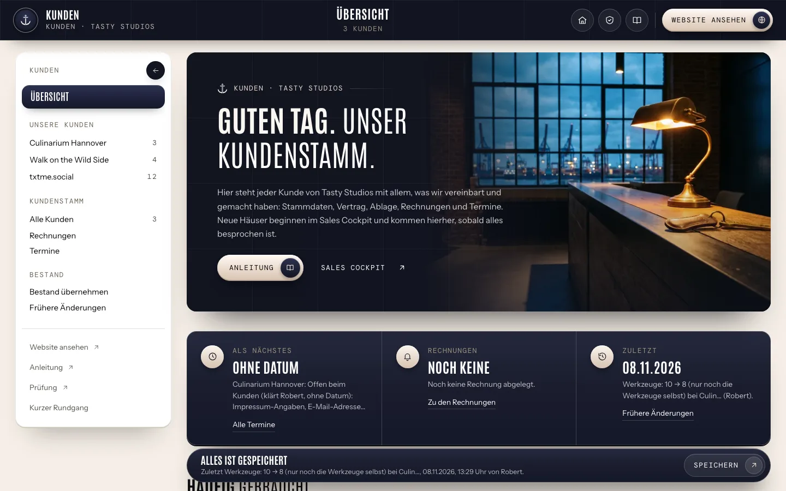
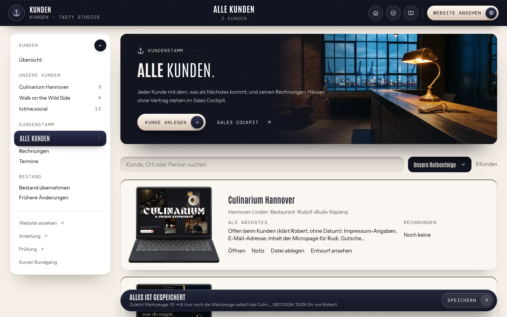
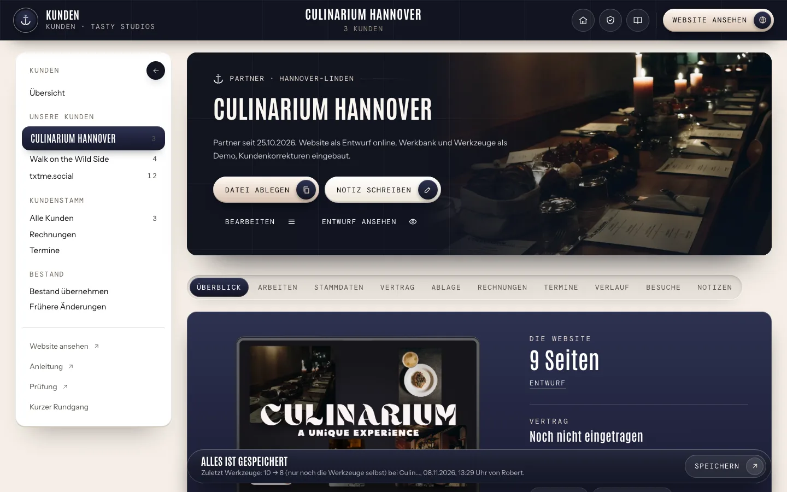
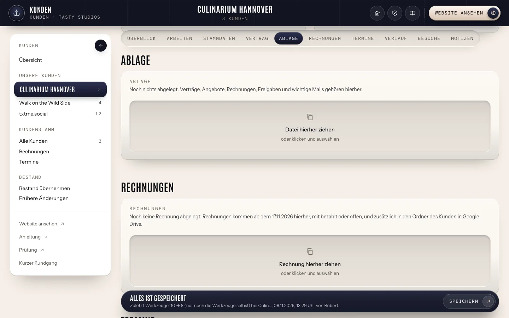
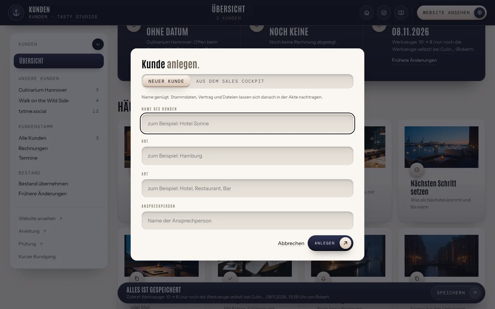
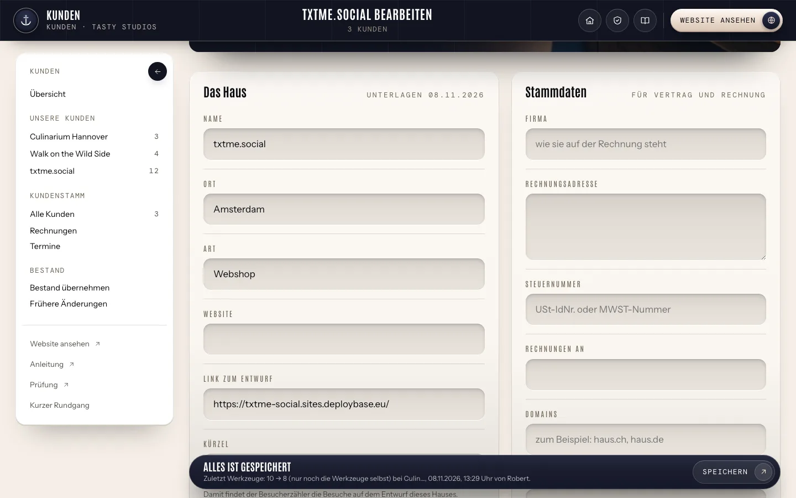
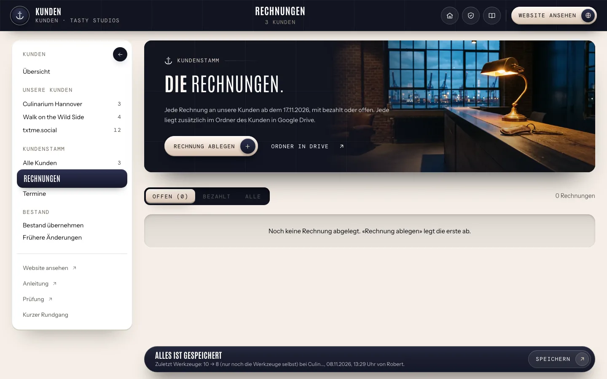

Kunden
So führst du den Kundenstamm.
In «Kunden» steht jeder Kunde von Tasty Studios mit Vertrag, als Akte: Stammdaten, Vertrag, Ablage, Rechnungen und Termine. Neue Häuser beginnen im Sales Cockpit und kommen hierher, sobald alle Gesprächspunkte abgehakt sind. Nichts speichert still: jede Änderung zeigt eine Quittung mit «Rückgängig».
Die Übersicht
Oben steht, was bei den Kunden als Nächstes kommt, welche Rechnungen offen sind und was zuletzt geändert wurde. Darunter «Häufig gebraucht» und alle Kunden, Häuser einer Familie zusammen in einem Block.
Links im Rand jeder Kunde einzeln, «Alle Kunden», «Rechnungen», «Termine» und der Bestand. Am Handy öffnet «Bereiche» oben den Rand.

Alle Kunden
Jeder Kunde als Karte mit seiner Website im Laptop, dem nächsten Termin und seinen Rechnungen. Oben suchst du nach Name, Ort, Person oder Firma und sortierst nach unserer Reihenfolge, Name, Ort, den neuesten Kunden oder zuletzt geändert.
Ein Klick auf den Namen oder den Laptop öffnet die Akte. «Notiz» und «Datei ablegen» in der Karte gehen, ohne die Akte zu öffnen.

Die Akte eines Kunden
Oben die Website im Laptop, der Vertrag, Werkzeuge und Beigaben. Die Reiter darunter führen zu «Arbeiten» (was wir gemacht haben), «Stammdaten», «Vertrag», «Ablage», «Rechnungen», «Termine», «Verlauf» (von Anfang bis Ende, mit den Gesprächen aus dem Sales Cockpit), «Besuche» und «Notizen».

Ablage und Rechnungen
Eine Datei in die Fläche «Datei hierher ziehen» legen oder anklicken. Das Fenster fragt nach Art (Vertrag, Angebot, Rechnung, Freigabe, Briefing, Mail, Sonstiges), Titel und Datum. Die Dateien liegen nur auf dem Rechner, nie online.
Rechnungen bekommen Nummer, Betrag, Fälligkeit und «Offen» oder «Bezahlt». Jede Rechnung geht zusätzlich in den Ordner des Kunden in Google Drive. «Bezahlt» setzt du direkt in der Liste.

Kunde anlegen
«Kunde anlegen» legt einen neuen Kunden an (Name genügt) oder übernimmt ein Haus aus dem Sales Cockpit. Das Haus verlässt dann die offenen Häuser im Cockpit, der Preis aus dem Cockpit wird im Vertrag festgehalten.
Sind im Sales Cockpit alle Gesprächspunkte eines Hauses abgehakt, fragt das Cockpit selbst «In den Kundenstamm aufnehmen?». Das Ergebnis ist dasselbe.

Bearbeiten, Quittung, Rückgängig
«Bearbeiten» öffnet das Haus, die Ansprechperson, die Stammdaten (Firma, Rechnungsadresse, Steuernummer, Domains, wo die Zugänge liegen) und den Vertrag. Was du änderst, wartet gelb, bis du speicherst. Danach zeigt eine Quittung vorher und nachher, mit «Rückgängig». Tastenkürzel: Cmd + S am Mac, Strg + S unter Windows.
Ein anderer Stand als «Vertrag» legt das Haus zurück ins Sales Cockpit; alles in der Akte bleibt erhalten.

Rechnungen und Termine aller Kunden
«Rechnungen» zeigt jede Rechnung an unsere Kunden ab dem 17.11.2026, zuerst die offenen. «Ordner in Drive» öffnet den Ordner «Tasty Studios · Rechnungen an Kunden» mit einem Ordner je Kunde.
«Termine» zeigt, was bei den Kunden als Nächstes kommt. «Nächsten Schritt setzen» legt einen Termin an, der Haken setzt ihn auf erledigt.

Wenn etwas nicht klappt
Jede Meldung trägt den Knopf «Was tun?». Er führt zur Prüfung: Sie läuft auch dann, wenn das Werkzeug selbst nicht startet, sagt, was los ist, und was zu tun ist. Gespeichertes geht dabei nie verloren.